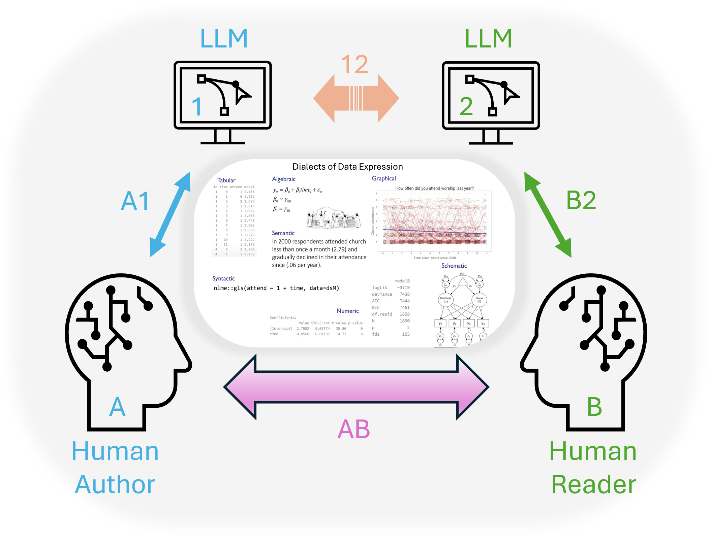
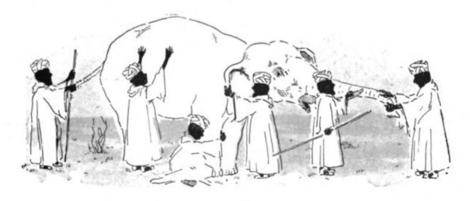
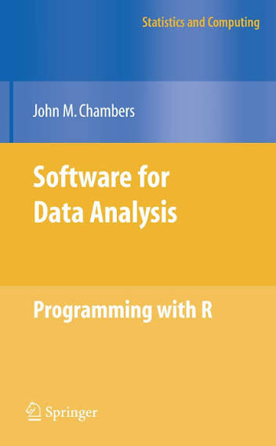
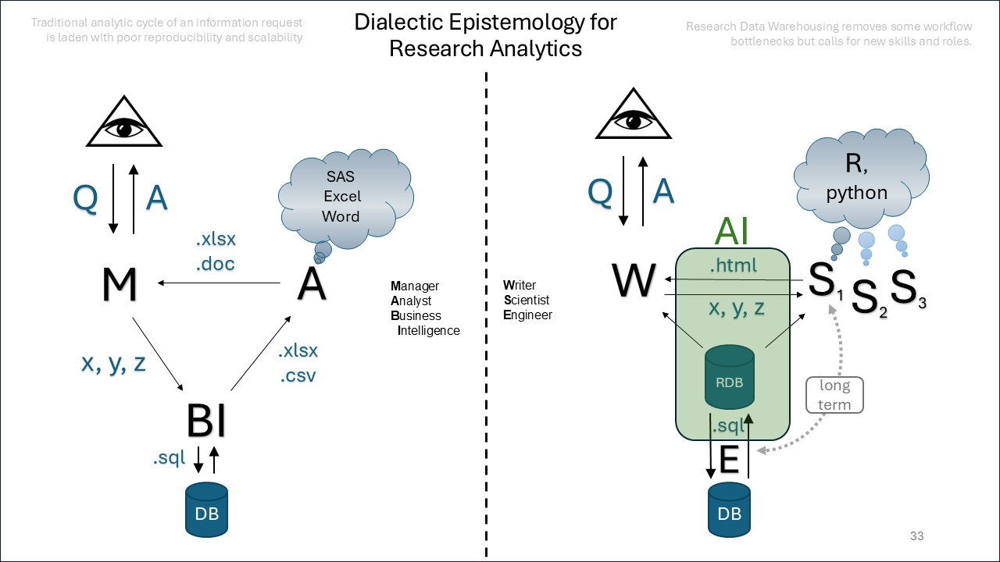
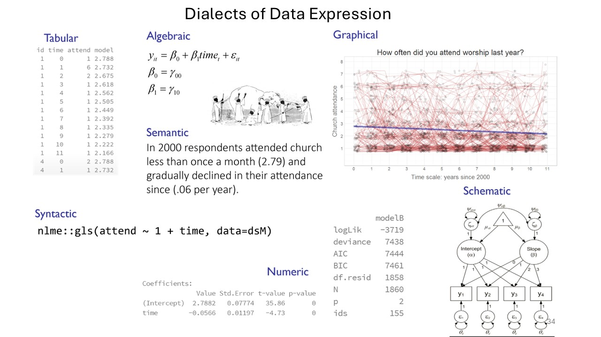
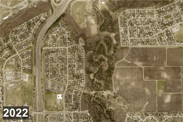
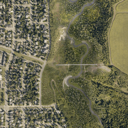
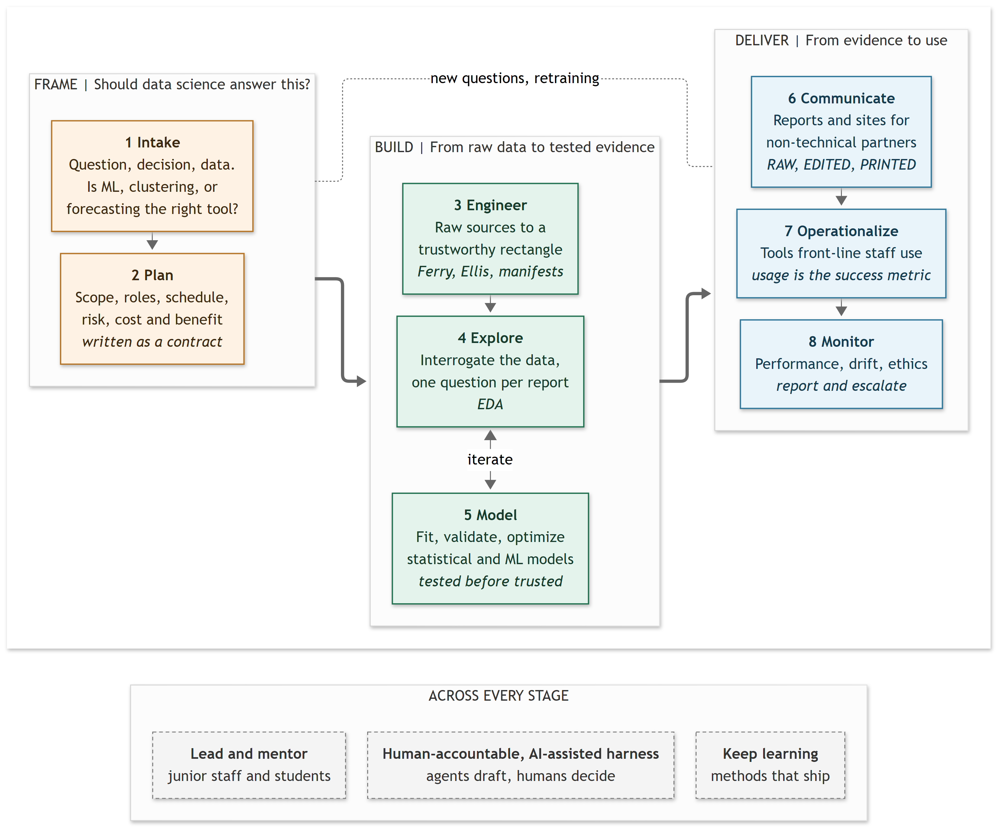

Illustrations
Every Figure and Graph on This Site
Every image on this site is listed below. Figures (fig) are images made elsewhere and brought in to illustrate a point. Graphs (g) are generated by the page that shows them. Hover over an illustration link anywhere on the site to preview the image; click it to land on its row here.
| ID | Kind | Thumbnail | Short description | Caption | Used in |
|---|---|---|---|---|---|
| fig01 | Figure |  |
Human-LLM communication model | Two humans, an author and a reader, each work with an LLM while exchanging one statistical model expressed in several dialects of data. The channels A1, B2, 12, and AB mark the four conversations among them. Source. Andriy Koval; slide from the talk “AI for Data Science Teams” (2026-09-09). | not yet used |
| fig02 | Figure |  |
Blind men and an elephant | The parable of the blind men and the elephant: each man touches a different part and describes a different animal, as each view of the data shows only part of the whole. Source. Illustrator unknown; Stebbins and Coolidge, Golden Treasury Readers: Primer (1909), p. 89; public domain (PD-US), via Wikimedia Commons. | not yet used |
| fig03 | Figure |  |
Chambers (2008), Software for Data Analysis | Cover of John M. Chambers, Software for Data Analysis: Programming with R (Springer, 2008), a foundational text on treating data analysis as programming. Source. Book cover; Springer Science+Business Media, 2008. | not yet used |
| fig04 | Figure |  |
Dialectic epistemology for research analytics | Two analytic cycles. Left: a manager, an analyst, and business intelligence trade spreadsheets and documents around a database. Right: research data warehousing, where a writer, scientists, and an engineer share a relational database inside an AI layer. Source. Andriy Koval; slide from the talk “AI for Data Science Teams” (2026-09-09). | not yet used |
| fig05 | Figure |  |
Dialects of data expression | One growth model of worship attendance expressed seven ways: tabular, algebraic, graphical, semantic, syntactic, numeric, and schematic. Andriy Koval; talk slide (public source to confirm). | not yet used |
| fig06 | Figure |  |
Edmonton orthophoto, 2022 to 2024 | The same patch of Edmonton in aerial orthophotos from 2022, 2023, and 2024, cycling year by year. Source. Andriy Koval (andkov/maps); imagery: City of Edmonton Open Data orthophoto repositories, 2022 to 2024. | not yet used |
| fig07 | Figure |  |
Edmonton orthophoto, concentric zoom | A concentric zoom on one tile of Edmonton’s orthophoto mosaic, stepping out level by level and back again. Source. Andriy Koval (andkov/maps); imagery: City of Edmonton Open Data orthophoto (year to confirm). | not yet used |
| responsibilities-g1 | Graph |  |
Data science project lifecycle | Lifecycle of a data science project: eight stages in three phases, with leadership, an AI-assisted harness, and continual learning across every stage. | Responsibilities |